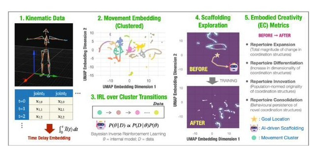
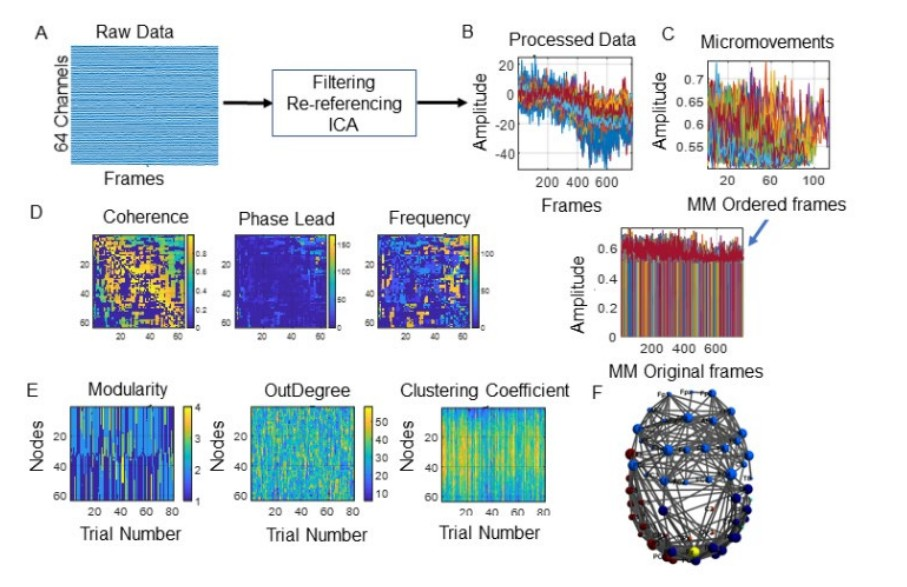
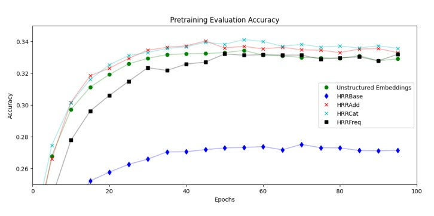
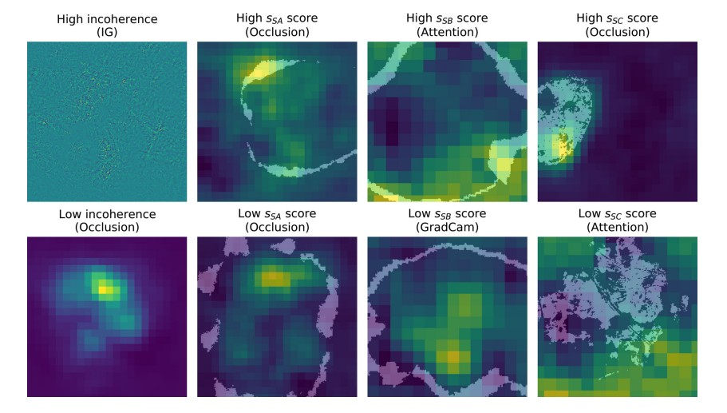
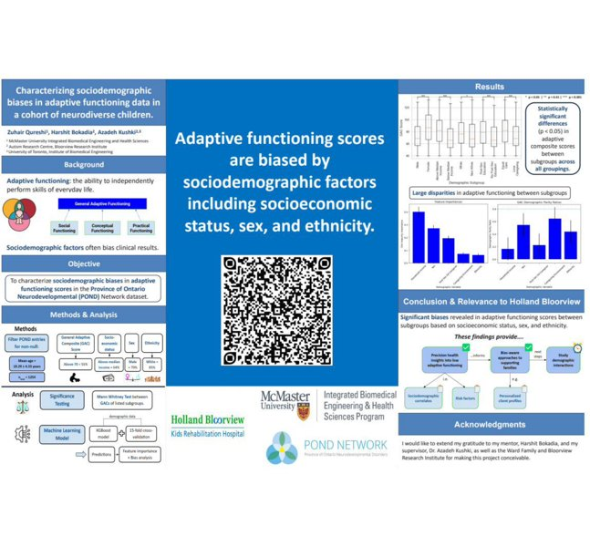
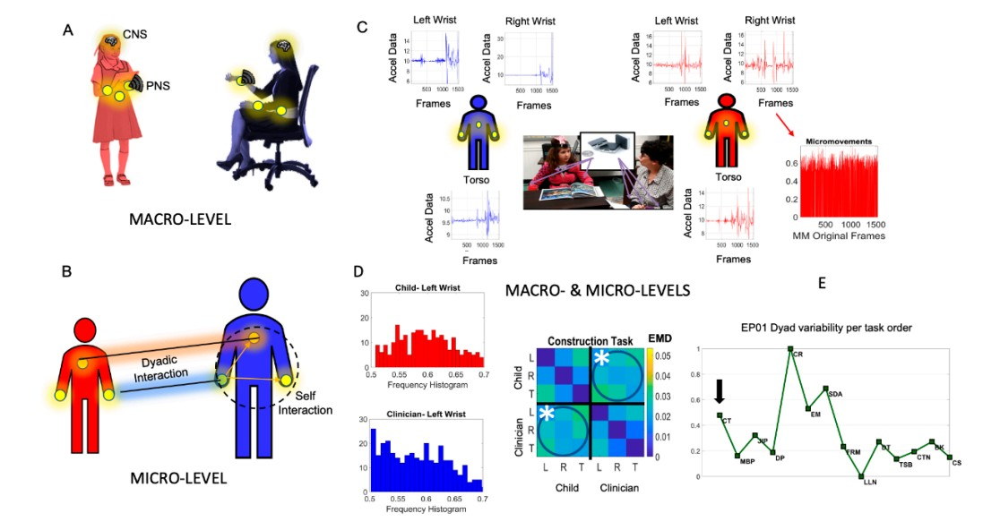

Research Associate · SUTD Singapore | Canadian Citizen
I am a Research Associate at SUTD Singapore, working on a Ministry of Education (MoE)-funded Science of Learning grant. My research builds AI pipelines for real-time estimation of learners' internal world models from motion-capture kinematic data, modelling movement exploration as a Markov Decision Process, running Bayesian inverse RL to recover reward structure and state-transition dynamics, and using these inferred world models to scaffold open-ended embodied creativity in real time. This work connects foundational questions in world model learning to the physical, embodied setting.
My path to this work is grounded in a sequence of distinct research and engineering experiences. I began with a BTech in Mechanical Engineering, followed by nearly two years as a Project Engineer in Industry 4.0 manufacturing in India. I then pursued an MS in Industrial and Systems Engineering at Rutgers, building depth in optimization, statistics, and systems thinking, with a thesis on deep learning for semiconductor process control. From there I moved into computational neuroscience and cognitive science at Rutgers, studying EEG, Brain-Machine Interfaces, neural connectivity, and digital biomarkers for autism. Following this, at the Cognitive and Data Science Lab, Rutgers-Newark, I contributed to XAI research under DARPA/AFRL, designing novel perceptual and semantic interpretability metrics for medical imaging. I then joined the Medical AI group at University of Waterloo, where I worked on vector-symbolic architectures for structured knowledge encoding in clinical NLP. After that, over nearly three years as a Research Engineer and Data Scientist at Canadian hospitals (Holland Bloorview and Waypoint), I built and deployed precision health AI systems using biosignals, large-scale clinical trial data, and production ML infrastructure.
I am now oriented toward physical AI, world model learning, and embodied agents, and toward LLM post-training, inference engineering, and AI infrastructure. My interpretability background informs a growing interest in mechanistic interpretability and alignment for LLMs and VLMs. I bring a broad foundation spanning physical systems, neural computation, clinical AI deployment, and symbolic knowledge representation to these frontier problems.

SUTD / MoE Science of Learning Grant
AI-Driven Scaffolding of Embodied Creativity
End-to-end pipeline for real-time estimation of learners' internal world models from motion-capture data. Human movement exploration is modelled as an MDP; Bayesian inverse RL recovers reward structure and state-transition dynamics; UMAP-clustered movement embeddings drive adaptive goal-state scaffolding. MuJoCo humanoid simulation grounds model learning in physically plausible motor behaviour.
Methods: Bayesian inverse RL · MDP · MuJoCo · UMAP · wearable physiological sensors

ACM MOCO 2020 · DOI ↗
Neural Connectivity Evolution during Adaptive Learning with and without Proprioception
Network-theoretic analysis of EEG-derived neural connectivity as participants learn novel motor tasks with and without proprioceptive feedback. Reveals how sensorimotor deprivation reshapes cortical communication graphs — directly informing world-model design for embodied agents learning from impoverished sensory streams.
Methods: EEG · EEGLAB · Cross-coherence · Graph-theoretic connectivity analysis

ACM KDD Workshop on Knowledge-Infused Learning · OpenReview ↗
Encoding Medical Ontologies with Holographic Reduced Representations for Transformers
Introduces holographic reduced representations (HRRs) — a vector-symbolic architecture — as a structure-preserving method to encode medical ontologies into transformer token spaces. HRRBase embeddings outperform unstructured embeddings on out-of-distribution disease prediction, including patients with entirely unseen ICD codes. Directly relevant to knowledge-infused LLM post-training, structured inference, and multimodal grounding.
Methods: HRR · VSA · SNOMED CT ontology · HRRBERT · MIMIC-IV · ICD coding

Applied AI Letters · DOI ↗
Evaluating Perceptual and Semantic Interpretability of Saliency Methods: A Case Study of Melanoma
Designed two novel evaluation metrics for saliency-based XAI: visual incoherence (perceptual coherence of attribution maps) and textbook feature overlap (semantic alignment to dermatologist-defined ABCDE features). Benchmarked six saliency methods on VGG-16 across the ISIC melanoma dataset. Enables adaptive method selection for high-stakes clinical AI — a framework directly transferable to mechanistic interpretability of LLMs and VLMs.
Methods: VGG-16 · GradCAM · SHAP · LIME · RISE · Occlusion · PyTorch · ISIC dataset
medRxiv
A Precision Health Approach to Medication Management in Neurodivergence
Multi-cohort international study (four datasets) developing and validating ML models for medication management in neurodevelopmental conditions. Combines structured clinical features with probabilistic modeling to support individualized treatment recommendations.
Clinical Child and Family Psychology Review
Predictors of Health-Related Quality of Life in Neurodivergent Children: A Systematic Review
Systematic review synthesizing evidence on quality-of-life predictors across neurodevelopmental conditions. Informed precision health AI pipelines at Holland Bloorview.

Holland Bloorview Kids Rehabilitation Hospital
Characterizing Sociodemographic Biases in Adaptive Functioning Data in Neurodivergent Children Mentorship
Mentored intern Zuhair Qureshi (McMaster) on this study using the POND Network dataset (n=1,254). XGBoost with 15-fold cross-validation identified statistically significant disparities in adaptive functioning composite scores across socioeconomic status, sex, and ethnicity subgroups — findings that inform bias-aware precision health tools for pediatric populations.
Methods: XGBoost · Mann-Whitney testing · Feature importance · POND Network dataset

Journal of Personalized Medicine · DOI ↗
Digitized ADOS: Social Interactions beyond the Limits of the Naked Eye
Applied wearable biosensors and statistical signal processing to the Autism Diagnostic Observation Schedule (ADOS), extracting high-dimensional sub-second kinematic features from socio-motor dyads invisible to human observers. Network connectivity analysis of cross-coherence matrices reveals dynamic social coordination patterns — a biosignals foundation for embodied AI systems that model social and adaptive behaviour.
Methods: Wearable inertial sensors · Cross-coherence · Network connectivity · ADOS-2 protocol
Open to research collaborations, thesis advising discussions, and roles in AI research and engineering across the US, Canada, and Singapore.